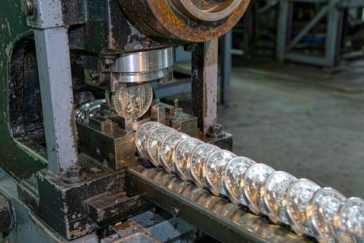
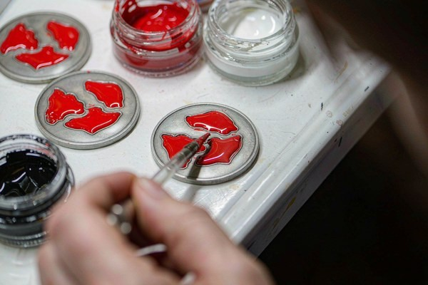

The Nine Stages at a Glance
Here is the whole route in one table, because the order matters more than people expect. Stages one through three build the shape. Stages four through seven build the surface. Stages eight and nine decide whether the coin is allowed to leave the building.
From Artwork to Tooling: Cutting the Steel Die
Everything begins with your artwork, and the factory's first job is to make sure the file can actually be manufactured. A designer opens your vector file and checks the things that break dies: strokes that are too thin, text smaller than the coin can hold, gradients that have no physical equivalent, and shapes that will collide once the die is cut. This is also the moment the depth of the relief gets decided, because a raised element has to be deep enough to read as raised but shallow enough that the metal behind it stays solid.
Once the file is approved, the design is engraved into a hardened steel die. This is a CNC or laser engraving process, and it is slow, precise, and expensive, which is why it is charged as a one-time tooling fee. The steel is cut to a mirrored negative of your artwork, because metal pressed into a reversed cavity comes out the right way round. Every ridge, every letter, every tiny engraved line gets cut into that steel, which is why a two-inch coin with a photograph on it can take an order of magnitude longer to tool than a simple emblem.
Once cut, the die is a physical object that the factory keeps on file, usually for two to three years, which is exactly why a reorder costs less than a first order. The tooling side of that logic is covered in detail in our guide to the challenge coin mold fee.
Die Casting vs Die Striking: The First Fork in the Road
Now the die goes to work, and the path it takes depends on how much relief your design needs. This is the single biggest fork in the manufacturing process, and it is decided by the artwork, not by the factory.
Die striking presses a soft metal disc into the steel die under high pressure. The metal flows into every cavity the die holds, producing a relief that is crisp and well defined but relatively shallow. Lettering stays sharp and edges stay clean, which is why military-style coins with lots of small text almost always end up here. It is also faster and cheaper per piece, because the blank is just a stamped disc waiting to be pressed.
Die casting goes the opposite way. Molten alloy is poured into a mold cavity and allowed to set, which means the relief can be genuinely three-dimensional, with sculpted shapes, undercut details, and cut-outs through the metal itself. That capability comes with trade-offs: the process is slower, the tooling is more expensive because the mold must account for shrinkage and venting, and size limits start to bite. If you want the deep sculptural look, our breakdown of 2D versus 3D challenge coins goes further into which style suits which design.

Blanks also have to be made before they can be struck or cast. Most are cut from sheet or rod stock into circular discs with a raised rim, sometimes with a sprue system attached for the casting path, and they arrive at the press raw and dull. The relief is where the coin stops being a disc and starts being an object worth giving away.
Polishing, Plating, and Why Thickness Is Measured in Microns
Roughly a third of a coin's life happens in the next two stages, and neither of them is visible until the coin is finished. Polishing comes first, and it is not optional decoration. The struck or cast blanks come off the line with microscopic pits, tool marks, and casting texture, and any of those defects sitting under an electroplating layer will show up later as blisters, pits, or an uneven surface that catches the light.
So the blanks get tumbled, then progressively buffed, until the surface is smooth enough to plate. This is also where a minted or prooflike finish gets its mirror fields, and where a 3D coin's sculpted surfaces get the extra hand attention they need. A well-polished blank feels smooth under a fingernail; a poorly polished one feels like it has a texture you cannot name, and it is that texture that will show up in the plating bath.
Then the plating. Your coin is hung on racks and dipped through a series of chemical baths, building up a thin layer of metal until it reaches the color and thickness you ordered: silver, gold, bronze, copper, black nickel, or a two-tone combination where masking creates the separate areas. Thickness is specified in microns, and one micron is one thousandth of a millimeter. A coin meant to be carried in a pocket for years usually lands around 5 to 10 microns. Thin plating wears through quickly and flakes at the edges where the coin gets handled most; thicker plating costs more but survives a lot more abuse.
Then the plating is sealed and buffed, and if you ordered a satin, antique, or matte finish, the surface gets a texture pass that softens the reflection. The finish vocabulary is larger than most buyers realize, and we break it down in our guide to challenge coin plating and finishes.
Enamel Filling and the Curing Oven
If the coin has color, the enamel stage is where a blank metal disc becomes the finished piece, and it is the most handmade part of the entire process. A worker draws colored enamel out of a small pot and drops it into the recessed fields of the coin, one field at a time, working across the piece. There is no spray gun and no printing press. It is a squeeze bottle, a steady hand, and experience, and a good filler will place the resin so that it sits a hair proud of the metal without slopping over the border and onto the flat relief.
That overflow is the most common defect on a finished enamel coin, and it is also the most obvious. Enamel that creeps over the edge of its field dulls the design and cannot be fixed without stripping and redoing the piece. This is where the difference between soft enamel and hard enamel shows up. Soft enamel goes in as a thick, slightly domed fill that keeps a tactile texture. Hard enamel is fired, ground flat, and polished so the surface is flush with the metal and glassy smooth, which is why it takes extra days and costs more. The soft enamel versus hard enamel comparison covers the trade-offs in full.
Curing is the oven. The filled coins are stacked on trays and baked, typically at a temperature in the range of 150 to 200 degrees Celsius for a controlled period, until the resin fully polymerizes and hardens. Under-curing is the quiet failure here, because a coin that comes out of the oven slightly under-baked looks perfect on the day it is inspected and then starts scratching, dulling, and shifting color a few months later. Cured enamel is stable for decades indoors, so a well-cured coin is one of the few souvenirs that genuinely outlasts the person who was given it at the ceremony.
Individual Inspection and Packing
Every coin gets looked at by a person before it is boxed. Not a spot check, not a random sample, but a hand inspection of each piece against the approved proof, because the cost of one defective coin reaching an award ceremony is much higher than the cost of the inspection. The checker is looking for the specific failure modes each stage can produce: plating blisters or uneven coverage at the edges, enamel overflow or underfill, thin design lines that broke during striking, soft or heavy weight against the tolerance, edge cuts that are not clean, and any surface scratching that plating failed to hide.
That inspection is only meaningful if there is something to inspect against, which is why the pre-production proof matters so much. A physical sample approved before the run starts is the reference for every later coin. If you have not locked a sample yet, this is the moment to ask for one, and the reason is spelled out in our timeline guide: approving the sample fast is the one stage you can control, and it removes the most expensive category of mistake.

Packing is the last stage and the least glamorous, but it is where an order becomes an order you can reorder. Coins are counted, bagged, and boxed, often with a run label that records the order number, the plating, and the date. Good packaging also does real work in transit, because a coin shipped loose in a mailer can arrive scratched no matter how well it was plated. Which specs to insist on having in writing before you order is covered in our guide to vetting a coin manufacturer.
After that, the coins go into cartons, get weighed against the packing list, and head out. From that point the process is out of the factory's hands and in the hands of freight carriers, which is a different set of variables entirely.
Want a Coin That Comes Out the Way You Drew It?
Send us your artwork and we will walk it through all nine stages with you, flag anything that will not cast cleanly, and hand you a free digital proof in 12 hours so nothing gets locked into steel by accident.
Get Free QuoteFrequently Asked Questions
How are custom challenge coins actually made?
A custom challenge coin goes through nine stages: artwork preparation, steel die cutting, metal striking or die casting, polishing, plating, enamel filling, curing, individual inspection, and packing. The first three create the shape and the relief, the next four create the color and the finish, and the last two decide whether the coin is good enough to leave the building.
How long does it take to manufacture a challenge coin?
The die cutting stage is a one-time cost of roughly one to two days, and it is stored for later reorders. A production batch then runs through striking, polishing, plating, enamel filling, curing, and inspection in about seven to ten days for a standard soft enamel coin. Add proof approval time and shipping, and a typical order lands around two to three weeks end to end.
What metal are challenge coins made of?
Most custom challenge coins start as a zinc alloy blank because it casts and strikes fine detail cheaply, then get plated to look like silver, gold, bronze, or copper. Brass is chosen when extra weight and warmth matter, copper when a natural patina is wanted, and stainless or iron appear in specific duty-driven designs.
Is the mold reused if I order the same coins again?
Yes, and this is the main reason reorders are cheaper than first orders. Once your design is cut into steel, the die is kept on file, typically for two to three years, and a repeat order skips both the tooling charge and the die cutting stage. Most manufacturers will confirm the storage window in writing before you place the reorder.
What is the difference between die striking and die casting?
Die striking presses a soft metal disc into a steel die with force, which produces crisp, shallow relief and sharp lettering. Die casting pours molten alloy into a mold cavity, which allows much deeper three-dimensional shapes, cutouts, and sculpted detail. Your design's depth decides which process it lands on.
Why does plating thickness matter so much?
Plating is measured in microns, and a micron is one thousandth of a millimeter. A thin plating layer wears through in a pocket in months and can flake at the edges, while a thicker layer costs more but survives years of handling. A common target for a coin meant to be carried is around 5 to 10 microns of plating over a properly prepared base metal.
Can I approve a sample before the whole run is made?
Yes. A pre-production sample or physical proof is made before the full run so you can check spelling, color, plating, edge, and weight against your artwork. Approving a sample before production is the cheapest way to catch a mistake, because changing a run after it starts means new tooling and new production time.
What happens if a coin does not meet my standard?
You should never ship from a failed inspection. Write your rejection criteria into the purchase order before production starts: no plating blisters, no enamel overflow past the metal border, no broken thin lines, and weight within the tolerance you specified. A factory that works to a written standard has something to measure against, and defects get reworked or remade rather than quietly shipped.